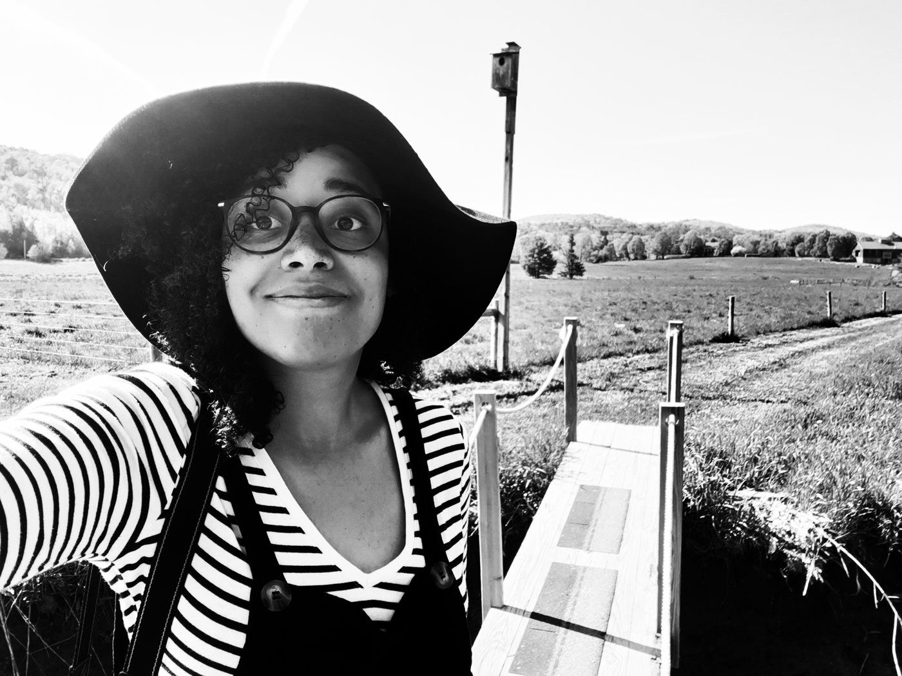
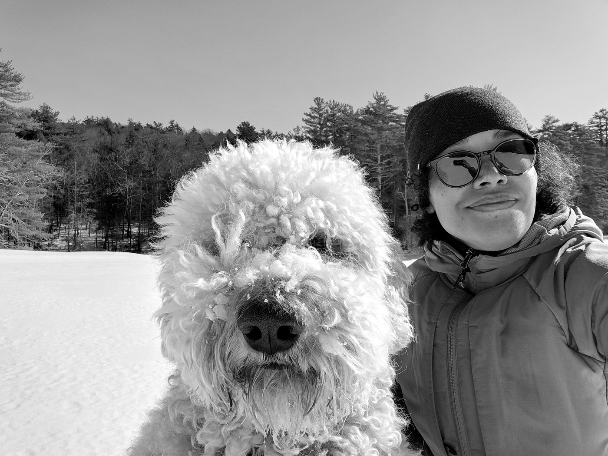

Analytical and multilingual, with a career built on bridging frontline operations and the technical systems behind them — from deep-dive process audits at Amazon to a background in computer technology and digital design.
Globally minded, having lived and worked across Brazil, the US, Scotland, and Portugal. Comfortable collaborating with diverse teams and stakeholders wherever the work takes me. Native in Portuguese, fluent in Spanish and English, and getting there in French.
Outside of work, photography has been a constant — documenting the places I've passed through, from Connecticut farmland to the Portuguese coast.

